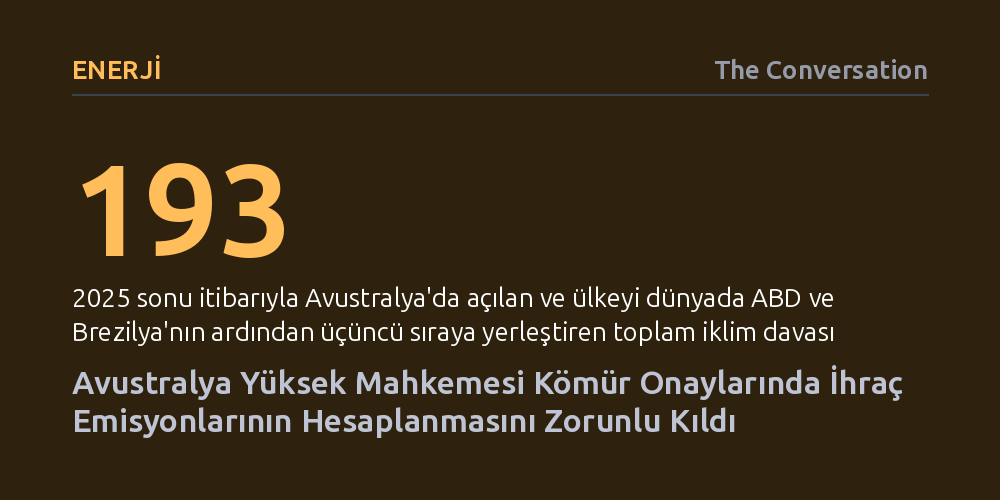

ENERJI · The Conversation · 2026-10-08
Avustralya Yüksek Mahkemesi, maden projeleri onaylanırken çıkarılan kömürün yurt dışında yakılmasından doğan Kapsam 3 emisyonlarının da değerlendirilmesi gerektiğine hükmetti. Karar, ihracata dayalı yeni fosil yakıt yatırımlarının maliyetini artırarak ekonomik gerekçesini temelden sarsıyor.
Fosil yakıt üreticilerinin 'kömürü biz sadece satıyoruz, nerede yakıldığı bizi bağlamaz' savunmasının hukuken geçersizleştiğini ve iklim davalarının enerji projelerinin iktisadi dengesini doğrudan değiştirebileceğini gösteriyor.

Avustralya Yüksek Mahkemesi, ülkenin iklim hukuku tarihinde dönüm noktası niteliğinde bir karara imza attı. Mahkeme, New South Wales eyaletindeki Mount Pleasant açık ocak kömür madeninin genişletilmesine ilişkin davada, planlama otoritelerinin madenin tüm karbon ayak izini hesaba katmak zorunda olduğuna hükmetti. Bu zorunluluk, çıkarılan kömürün başka ülkelerde yakılmasıyla ortaya çıkan dolaylı emisyonları da kapsıyor.
Dava, maden işletmecisi MACH Energy'nin yıllık 10,5 milyon ton olan üretim kapasitesini 21 milyon tona çıkarmak ve işletme süresini 2048'e kadar 22 yıl uzatmak istemesiyle başladı. Eyalet planlama komisyonunun verdiği genişletme onayına yerel bir çevre grubu itiraz etti. Yerel halk, madenden kaynaklanan seragazı salımlarının bölgedeki iklim krizini nasıl derinleştireceğinin yeterince incelenmediğini ve emisyonları en aza indirme şartının ihlal edildiğini savundu. Yüksek Mahkeme de bu itirazı haklı bularak onay sürecindeki teknik ihmali tescilledi.
Kömür ve gaz projelerinin karbon ayak izinin ezici çoğunluğu, üretim sahasından değil, yakıtın son kullanıcılar tarafından yakılmasından kaynaklanıyor. Fosil yakıt şirketleri ve izin makamları uzun süredir "Kapsam 3" olarak tanımlanan bu emisyonların, kömür yurt dışına ihraç edildiğinde Avustralya'nın değil, alıcı ülkelerin sorumluluğunda olduğunu öne sürüyordu.
Yüksek Mahkeme'deki üç yargıç bu argümanı kesin bir dille reddetti. Yargıç Michelle Gordon kararında, "bu emisyonlar nasıl sınıflandırılırsa sınıflandırılsın aynı yıkıcı etkiye sahip" değerlendirmesinde bulundu. Mahkeme çoğunluğu, planlama komisyonunun Kapsam 3 emisyonlarını ve bunların nasıl azaltılabileceğini yeterince değerlendirmediğini belirtti. Böylece, emisyonların sınır ötesinde gerçekleşmesinin projeyi hukuki denetimden muaf tutamayacağı ilkesi yerleşti.
Karar tek bir madeni doğrudan konu alsa da New South Wales eyaletinde onay bekleyen 17 farklı kömür projesinin geleceğini doğrudan etkiliyor. İzin makamları artık her yeni kömür ve gaz başvurusunda, şirketlerin Kapsam 3 emisyonlarını sınırlandırmaya dönük somut önlemler önermesini şart koşmak durumunda kalacak. Bu durum maden geliştiricilerini karbon denkleştirme gibi maliyetli yöntemlere yönelmeye zorlayabilir.
Ancak karbon kredileri ve denkleştirme mekanizmaları kesin bir çözüm sunmaktan uzak; zira şirketlerin mevcut salımlarını başka yatırımlarla dengeleyip aynı miktarda fosil yakıt yakmayı sürdürmesine zemin hazırlayabiliyor. Yine de sınır ötesi emisyonları azaltma veya dengeleme zorunluluğu, madencilik operasyonlarının maliyet tablosunu ciddi biçimde ağırlaştırarak yeni fosil yatırımlarının ticari kârlılığını sarsma potansiyeli taşıyor.
Avustralya, gevşek mevzuat düzenlemeleri ve yüksek toplumsal duyarlılığın birleşimiyle iklim davalarının dünyadaki en önemli merkezlerinden biri haline gelmiş durumda. 2025 sonu itibarıyla kayıtlara geçen 193 iklim davasıyla Avustralya; ABD ve Brezilya'nın ardından üçüncü sırada yer alıyor. Hükümetlerin siyasi çekincelerle yavaş hareket ettiği alanlarda yargı denetimi, şirketleri ve bürokrasiyi doğrudan eyleme geçmeye zorlayan en etkili mekanizmaya dönüşüyor.
Bu karar, uluslararası hukukta son dönemde belirginleşen genel bir eğilimi de teyit ediyor. İngiltere ve Norveç mahkemeleri fosil yakıt izinlerinde tüm dolaylı emisyonların hesaba katılmasını zorunlu kılarken, Uluslararası Adalet Divanı da devletlerin sınır ötesi etkileri değerlendirme yükümlülüğü bulunduğunu vurgulamıştı. Pasifik ada ülkelerinin baskısıyla karşı karşıya olan Avustralya için bu karar, fosil yakıtların iklimsel maliyetlerinin artık bürokratik masalarda görmezden gelinemeyeceğini gösteriyor.